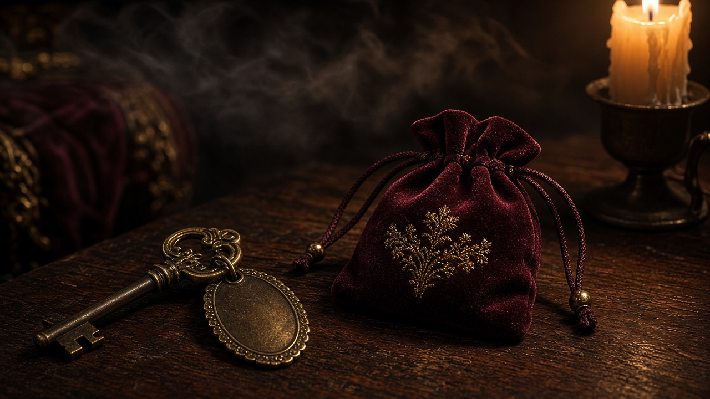

La Chambre
« La clé ne ment jamais. La porte, parfois. »
Le voleur a rejoint une suite de l’aile ouest. Sur la clé fournie dans le kit, le numéro est partiellement effacé — seuls les deux derniers chiffres restent lisibles.
Le registre des chambres (feuille pliée sous le plateau) indique que les suites de l’aile ouest commencent toutes par le même chiffre. Assemblez : chiffre de l’aile + les deux de la clé. Ce code libère le dîner.
Indice
L’aile ouest porte le numéro d’étage gravé dans le fer de la clé, côté anneau — pas sur la lame.